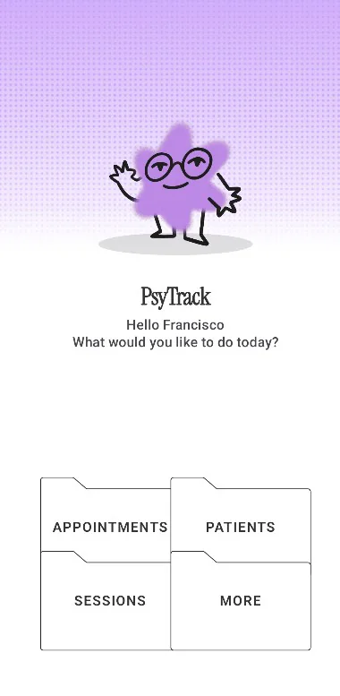
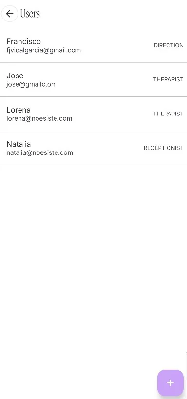
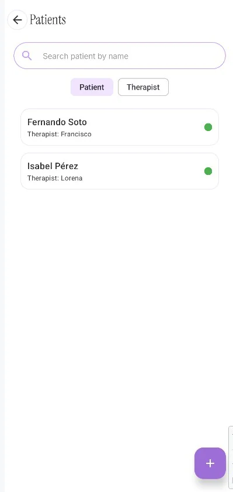
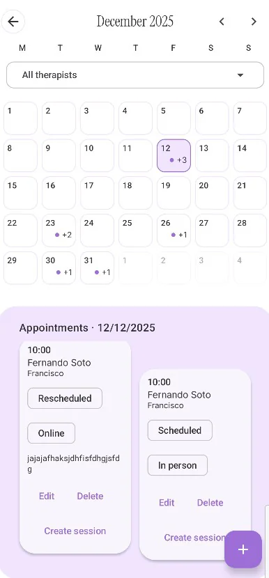
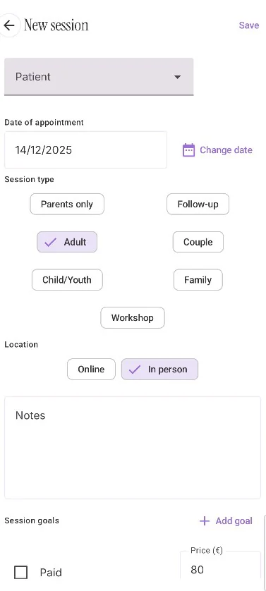
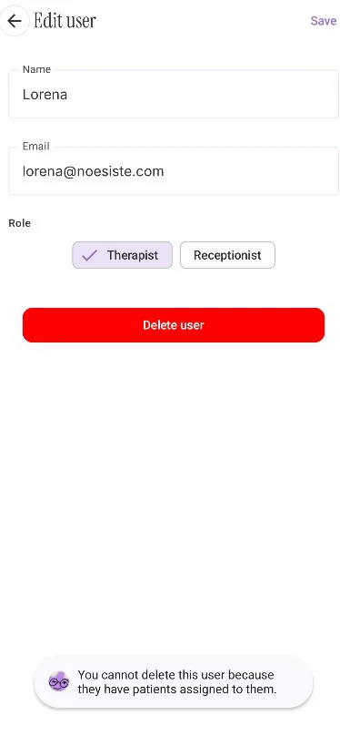

PsyTrack
Aplicación Android con la que una consulta de psicología gestiona las fichas de sus pacientes, organiza la agenda de citas y registra cada sesión. Varias clínicas independientes pueden usar la misma aplicación sin que sus datos se crucen nunca, y cada miembro del equipo ve solo lo que su función requiere. Tres clínicas esperan la primera versión para probarla.
| Rol | Alcance | Acceso al contenido clínico |
|---|---|---|
| Director | Toda la clínica | Sí |
| Psicólogo | Sus pacientes asignados | Sí |
| Secretario | Alta de pacientes y citas | No |






Cada clínica es un tenant. Su identificador acompaña a toda consulta que sale de la aplicación, pero el aislamiento real está en las reglas de seguridad de Firestore, que rechazan en servidor cualquier lectura cuyo tenant no coincida con el del usuario autenticado. Quien modifique el cliente puede lanzar la consulta de todos modos, así que ocultar pantallas no habría bastado.
companyId ata cada miembro del equipo a su clínica, y es la frontera que separa un tenant de otro. therapistId fija quién atiende a quién, y es la relación que se comprueba antes de abrir una ficha. Citas, sesiones y documentos cuelgan del paciente y arrastran esas dos restricciones, de modo que el alcance de cualquier consulta queda determinado por la cadena completa.Crear o borrar la cuenta de otra persona exige credenciales de administrador, y esas no pueden ir dentro de un APK: un APK se descarga y se descompila. La aplicación pide la operación a un backend propio y le envía el token del usuario que la solicita, así que es el servidor quien comprueba si tiene autoridad. El alta devuelve una contraseña temporal y marca la cuenta con mustChangePassword.
Cada mañana la aplicación consulta la agenda y, si hay pacientes ese día, avisa al profesional. La tarea se programa con WorkManager y no con un temporizador en memoria, porque debe sobrevivir al cierre de la aplicación y al reinicio del dispositivo. A cambio, Android puede retrasarla para agrupar trabajo y ahorrar batería: el aviso llega alrededor de la hora fijada. Para un recordatorio me vale; si hiciera falta puntualidad exacta, habría que pasar a AlarmManager.